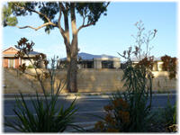

Si no te gusta tu vida, véndela
Ian Usher tiene 45 años, vive en Australia, está harto de su vida, y eso no sería nada fuera de lo común si no fuera porque ha decidido venderla.
A partir de hoy 22 de Junio del 2008 y durante una semana, Ian está subastando su vida en eBay y ha creado una página en Internet explicando cómo alguien puede comprarla.
La página de Ian: A life 4 sell
El paquete de Ian Usher incluye:
- Casa: Valuada en aproximadamente $397,000 US. Con tres recámaras y spa.
- Vehículos: Un auto Mazda 1989, una motocicleta Kawasaki, una moto acuática Kawasaki y una bicicleta de montaña.
- Mobiliario y equipo: Casa de campaña, equipo de paracaidismo, home theater y otras cosas.
- Trabajo: Sus amigos del lugar donde trabaja ofrecen dos semanas a prueba para el comprador, mas otros tres meses a prueba, después de ese tiempo el empleo es permanente.
- Amigos: Evidentemente no vende la amistad de otras personas, sino más bien ofrece presentar al nuevo comprador con sus amigos para que tenga gente conocida y a quien acudir en caso de necesidad.
Pueden ver como va la subasta en eBay aquí, a partir de hoy y hasta el 29 de Junio.
¿Porqué lo hace?
Vender la vida completa es un poco drástico, pero como explica en su página, lo hace para dejar atrás su vida anterior debido a la ruptura con su esposa, después de 5 años de casados y 12 de convivencia.
Aclara que no lo hace por venganza o despecho, sino que simplemente quiere empezar de nuevo en algún otro lugar. Más detalles sobre sus razones en este enlace (en inglés).
No es el primero
Pero él no es el primero en poner su vida a la venta:
- El año pasado, un estudiante de filosofía, Nicael Holt, de 24 años, subastó su vida como una protesta ante la cultura de consumo masivo, y la tendencia a ponerle precio a todo, incluso a las relaciones personales. El ofreció su identidad, sus posesiones, amistades y relaciones sentimentales, la compra incluía un curso de 2 meses para convertirse en Nicael Holt. En eBay la puja más alta llegó a los $5,900 US, pero como indica Nicael en su página en Myspace, ninguno de los posibles compradores tuvo la disposición de dejar la vida por la suya ^_^. En la actualidad parece dedicarse a vagar por el mundo.
- John Freyer, en al año 2001 empezó el proyecto All My Life For Sale (Toda Mi Vida En Venta) y vendió todo lo que poseía en eBay, su motivación fue deshacerse de todas las cosas innecesarias e identificar lo indispensable para vivir. Finalmente vendió su sitio web al Museo de Arte de la Universidad de Iowa.
- Tambien en el 2001, Adam Burtle, un estudiante estadounidense de 20 años, puso a la venta su alma en eBay, empezando la subasta en 5 centavos, y su novia lo apoyó a su vez ofreciendo $6.66. Finalmente la puja final llegó a $400 US, ofrecidos por una mujer de Iowa. Aunque eBay no le pareció la venta y sacó la subasta de su sistema. Mas información aquí y aquí (en inglés).
El caso de Ian Usher no es el único, pero al parecer tiene una motivación mucho más práctica que la de los casos anteriores: Dejar todo atrás y empezar de nuevo.
Y al parecer tendrá los recursos para hacerlo, después de todo lo que está vendiendo no está nada mal. En el momento de publicar esta nota la puja más alta está en $1,855,300.00 dólares australianos, o sea aproximadamente $1,770,000.00 US. Ya les comentaré cuál es el precio final.
Ahí queda como una idea para quien desee dejar todas sus posesiones y partir con sólo una mochila con ropa al hombro y su pasaporte, tal y como quiere hacerlo Ian.
Quienes quieran ir viendo la subasta (y fotografías de lo que está a la venta), sigan este enlace a eBay.
Actualización (24/06/08): Pasó algo raro con las cifras anteriores o_O. Al día de hoy, la máxima oferta es de $310,100.00 AU. O sea, $296,822.43 US. (Tal vez se arrepintieron ^_^, o leí mal).
Lectura inicial en Marginal Revolution: Markets in everything: lives for sale
Metadatos y acciones
 Temas: curiosidades, internet ⋅
Para guardar: Enlace permanente a esta anotación.
Temas: curiosidades, internet ⋅
Para guardar: Enlace permanente a esta anotación.
 Print This Post
Print This Post
Categorías
Últimas 4 anotaciones
Últimas anotaciones en cada categoría

Divulgación
El dinero no fomenta la creatividad: Daniel Pink en TEDGlobal 2009

Inspiración
Los 30 no son los nuevos 20

Noticias
Ver tu mente en tiempo real: Christopher deCharms en TED 2008
![Música en la era digital [Animación]](../../../wp-content/themes/tma/images/featured/animation_04_2009_featured.jpg)
Ocio
Música en la era digital [Animación]
Comentarios
Los comentarios están cerrados.
Comments are closed.